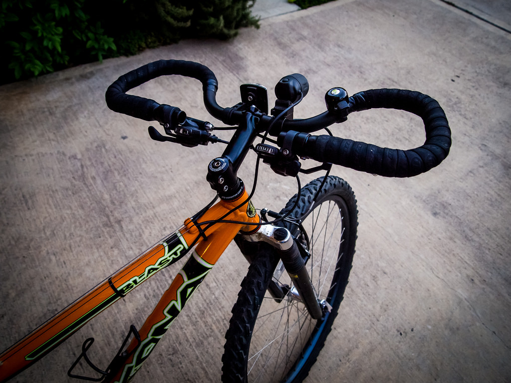

Are "Butterfly" handlebars right for you?

Why to use butterfly handlebars:
- They offer multiple hand positions
- They’re narrow, making them great for splitting traffic
- They have great access to the brake levers
- You can easily mount mountain bike gear shifters and brake levers
- They’re excellent for beginner bicycle tourers
Why to NOT use butterfly handlebars:
- They’re not as wide as flat bars for out-of-the-saddle stability
- Bar tape must be used, which can be rather easy to tear